SOLID
Object Oriented Design
What is OOD?
Object-oriented design is the process of using an object-oriented methodology to design a computing system or application. This technique enables the implementation of a software solution based on the concepts of objects.
What is SOLID?

SOLID?
SOLID - LODIS - IDOLS?
SOLID is an acronym for the first five object-oriented design (OOD) principles by Robert C. Martin, popularly known as Uncle Bob.

Basic Principles of OOD
- Single-responsiblity principle
- Open-closed principle
- Liskov substitution principle
- Interface segregation principle
- Dependency inversion principle
Single-responsiblity principle
A class should have one, and only one, reason to change.
The God Object
- A God object is an object that knows too much or does too much.
- The opposite of the SRP
Non-compliant
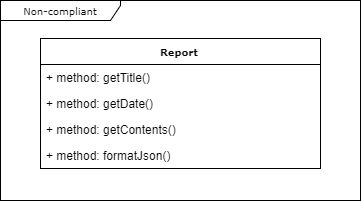Compliant
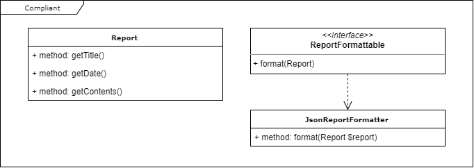Open-closed principle
Entities should be open for extension, but closed for modification.
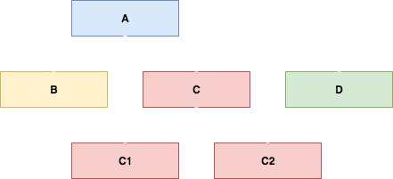Change behavior without modifying source code...
Avoid code rot.
Separate extensible behavior behind an interface, and flip the dependencies.
Non-compliant
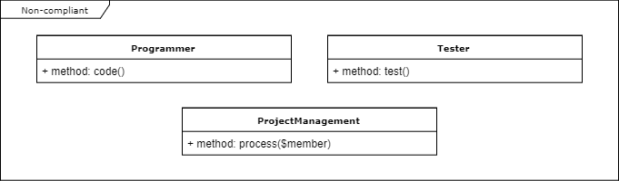Compliant
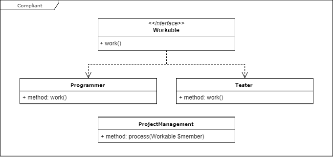Liskov substitution principle
Let q(x) be a property provable about objects x of type T.
Then q(y) should be provable for objects y of type S where S is a subtype of T.
Derived classes must be substitutable for their base classes.
Non-compliant
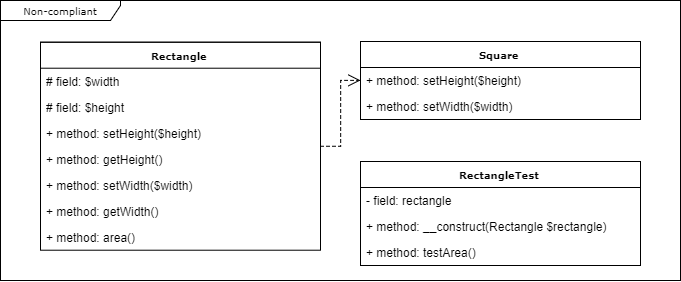Non-compliant
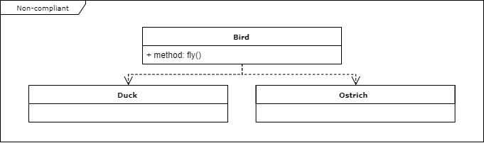Compliant
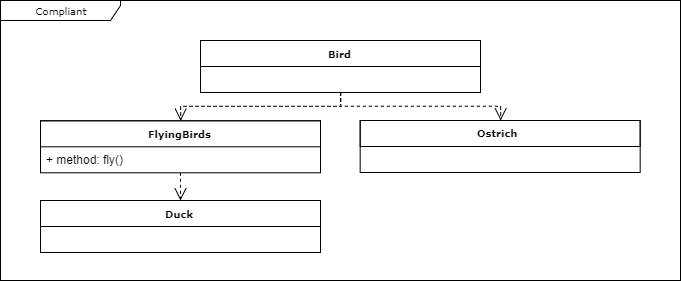If it looks like a duck, quacks like a duck, but needs batteries; you probably have the wrong abstraction.
Interface segregation principle
A client should not be forced to implement an interface that it doesn't use.
Non-compliant
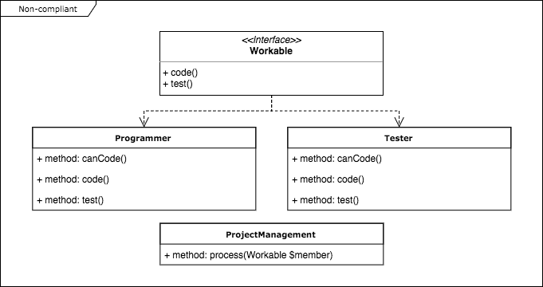Compliant
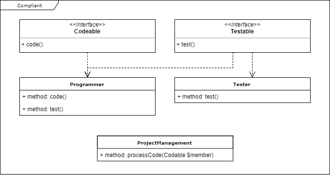ISP Smells
If you implement an interface or derive from a base class and you have to throw an exception in a method because you don't support it, the interface is probably too big.
Tailor interfaces to individual client's needs.
Dependency Inversion Principle
Depend on abstractions, not on concretions.
Non-compliant
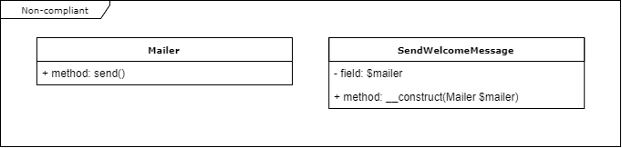Compliant
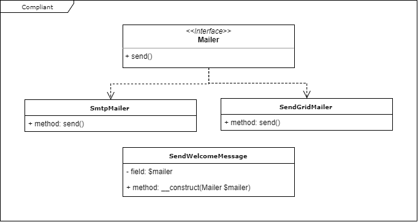Would you solder a lamp directly to the electrical wiring in a wall?